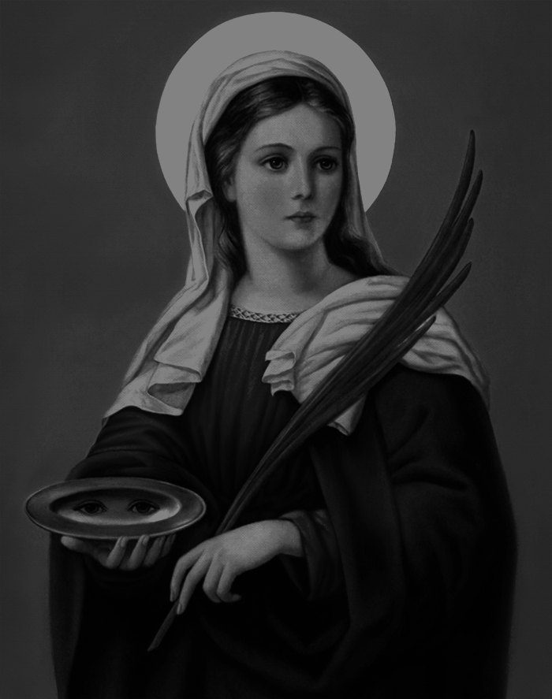
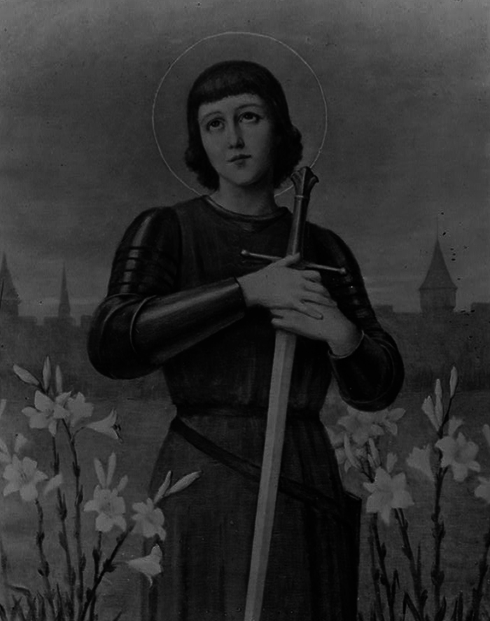

A Gentile's Guide to Christian Martyrdom

St. Lucia
Patron Saint of Blindness. Feastday: December 13th.

St. Joan
Patron Saint of Blindness. Feastday: December 13th.
St. Sebastian
Patron Saint of Blindness. Feastday: December 13th.